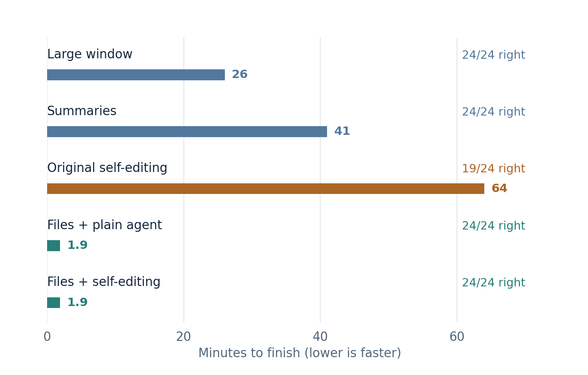

Keep records in files
A long task can use a small working context.
Keep the records outside the conversation and load what matters. Code or search can find a relevant passage, update a total or check a file without asking the model to reread the whole archive.
What changed in the ledger test?
The model processed a long stream of updates, then answered 24 questions about the final totals. With files, both agents answered all 24 in about 1.9 minutes and kept active context below 9K tokens.

Files cut the amount of text generated to about 7–8K tokens, versus 89K with the large window and 211K with summaries. Code kept the totals; the model did much less reading and writing.
Does writing a file slow decoding?
A file operation takes time between model calls. It does not make the model read the entire archive for every new output token. The smaller active context can also make generation faster.
The test measured total task time. It did not isolate file-write overhead or show that disk access is free. Streaming the model’s numerical cache from disk is a different operation.
What should be saved?
A table of current totals was enough for this task. An exact quotation or a question about an old change may need the original records. Save those too when later questions could depend on them.
Saving a record preserves its bytes; finding the right passage and using it correctly still matter.
A failure to avoid: saving only part of a record
In the earlier key-value trials, some shell pipelines saved and displayed a batch at the same time. Stopping the display early also stopped the save, leaving truncated files. Save the complete record first and preview it afterward.